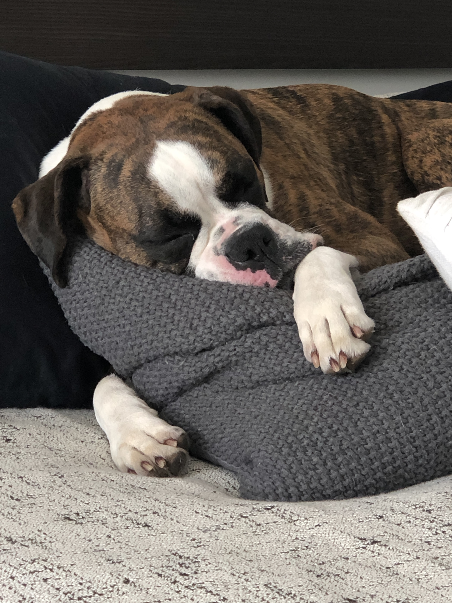

ABOUT ME
👋 I lead the Fraud & Anti-Money Laundering (AML) engineering org at SoFi, spanning fraud, data, and AML engineering. I've spent 7 years there through hypergrowth, from a 400-person pre-IPO startup to the fastest-growing bank in US history. Millions of people trust SoFi with their finances, and I feel fortunate that my job is to help keep their money safe.
Before SoFi, I was at NASA Ames Research Center, building software to assist in the research and testing of thermoprotective materials for spacecraft reentry (I have a background in chemical engineering).
LEADERSHIP FOCUS
TECHNICAL BACKGROUND
ML Systems & Production AI
Real-time ML feature pipelines, model deployment & governance, staged rollouts, A/B testing, low-latency ML inference
Distributed Systems & Infrastructure
AWS, Kubernetes, Kafka/Kinesis, Snowflake, Apache Iceberg, Trino, Druid, Spring Boot
Languages
Kotlin, Java, Python, SQL, JavaScript
EXPERIENCE
SoFi
March 2019 - Present
OTC Exchange Network
NASA Ames Research Center
EDUCATION
SAN JOSE STATE UNIVERSITY
Bachelor of Science in Chemical Engineering
Minor in Computer Science
HONORS AND AWARDS
NASA ASAP Award
NorCal AIChE Senior of the Year
Outstanding Senior Award
Outstanding Junior Award
Promise Award
Dean's Scholar
President's Scholar
